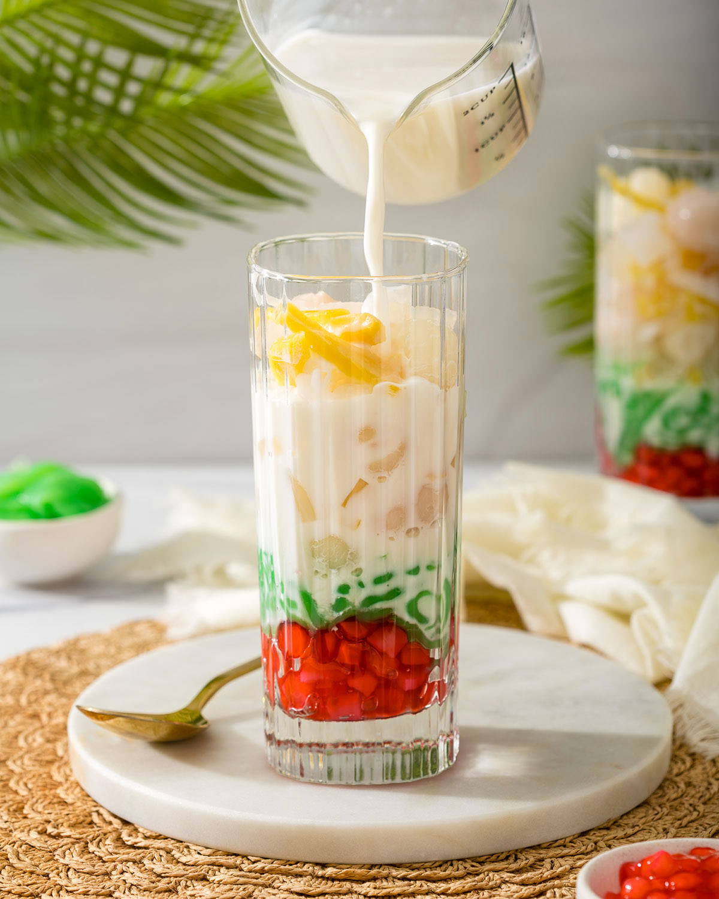

Che Thai

Picture Source - Takestwoeggs
Description
Colorful, sweet, refreshing, and filled with fun textures only begin to describe my all-time favorite Vietnamese dessert Che Thai. Made with jackfruit, lychees, longan, pandan jelly, and red rubies, you can taste the Southeast Asian rainbow with this crowd-pleaser dessert.
Che Thai is the perfect dessert to make for events hosting large groups of people. It is lightly sweet, filled with delicious tropical fruit, and so refreshing on a hot day.
Ingredients
AGAR JELLY
- Agar-agar: agar is a vegetarian gelatin substitute that helps solidify the simple syrup and creates a subtly sweet jelly texture.
- Granulated Sugar: sweetens the agar jelly
RED RUBIES
- Whole water chestnuts: make sure to use whole water chestnuts and not use pre-diced water chestnuts since they will not have that same amount of crunch.
- Red food coloring: the red food coloring is what gives the water chestnuts its “ruby color”
- Tapioca starch: tapioca starch creates a chewy clear layer around the water chestnuts that mimic a pomegranate.
PANDAN JELLY (CENDOL)
- Mung Bean Flour: mung bean flour or mung bean starch is the base of the pandan jelly.
- Tapioca Starch: tapioca starch or tapioca flour gives the pandan jelly a nice chewy texture.
- Rice Flour: rice flour thickens the jelly and also aids in its chewy texture. Do not mistake rice flour for glutinous rice flour it is not the same.
- Pandan Extract: pandan extract gives the jelly a subtle pandan vanilla flavor and a bright vibrant green color.
COCONUT HALF & HALF BASE
- Coconut milk: I recommend using Chef's choice coconut milk for the best tasting coconut milk. The coconut milk will be thickened with tapioca starch and flavored with sugar and salt.
- Half and Half: half and half is the main base of this dessert. It is what makes che thai creamy and lightens all the sugars from the syrup.
- Palm Sugar: palm sugar is used for the palm sugar simple syrup that is used to create an additional sweetness to the coconut milk.
CANNED FRUIT
Below I've listed the canned fruit that you need for this che thai recipe. I recommend finding them in an Asian grocery store before buying online since it's a lot more cost-efficient in-store.
- Lychee
- Jackfruit
- Longan
- Toddy palm seeds
- Canned coconut jelly
- Canned pineapple jelly
Steps
-
AGAR JELLY
- In a small saucepan, mix 2 teaspoons agar, 3 tablespoons of sugar, and 1 ¾ cup water and mix on high until it dissolves and reaches a boil. Once it reaches a boil, pour it into a shallow bowl and set it aside until it hardens.
- Once it hardens, thinly slice into ¼ inch strips.
-
RED RUBIES
- Prepare the water chestnuts. In a medium-sized bowl, add the diced water chestnuts and red food coloring. Mix until all the pieces are red. Then add the tapioca starch and toss until fully coated.
- Cook the red rubies. Boil water in a small saucepan. Then add the coated water chestnuts into the boiling water and stir to prevent them from sticking. Boil for about 2-3 minutes until it floats and has puffed out slightly. Then scoop it all out with a slotted spoon or spider strainer and immediately place it in an ice bath for about 10 minutes. Drain and set aside in a small bowl.
-
PANDAN JELLY (CENDOL)
- Mix the batter. In a medium saucepan, mix together the mung bean starch, tapioca starch, rice flour, and water until combined. Then add in 1 teaspoon of pandan extract and stir until combined.
- Cook until thickened. Cook on high heat and continuously stir until it reaches a boil and some pieces begin to cook underneath and small dark translucent pieces come to the top, about 3 minutes. Then turn the heat to low and keep stirring until it is thick, slightly translucent, and begins to bubble for about 3 minutes.
- Mold worms. Using the ¼ inch circles setting on your mashed potato ricer, pour a few scoops into the ricer and squeeze the green worms over a bowl of ice water. Let it steep for about 10 minutes. Drain and aside in a medium bowl.
-
COCONUT MILK
- Make tapioca slurry. In a small bowl, mix together the tapioca starch and 2 tablespoons of water until combined.
- Cook the coconut milk. In a medium saucepan, add the tapioca slurry, coconut milk, water, salt, and sugar and mix to combine. Heat on medium-high heat and stir until thickened. Then, set aside to cool.
-
PALM SUGAR SIMPLE SYRUP
- Make the palm sugar simple syrup. In a small saucepan, heat the palm sugar and 1 cup of water until the sugar is dissolved. Set aside to cool.
-
ASSEMBLY
- Cut the fruit. Cut the jackfruit into small strips and thinly slice the toddy palm seeds.
- Mix together. In a large mixing bowl, mix together the sliced sugar jelly, lychee with ⅔ cup of syrup, longan with ⅔ cup of syrup, jackfruit with ⅔ cup of syrup, pineapple jelly jar with all the syrup, coconut jelly jar with all the syrup, coconut strings, and sliced toddy palm seeds.
- Assemble. In a tall glass, add 1-2 ladles of the fruit mixture, 1 scoop of the red rubies, 1 scoop of green worms, ¼ cup of coconut milk, ice, and 1-2 tablespoons of palm sugar simple syrup to taste.